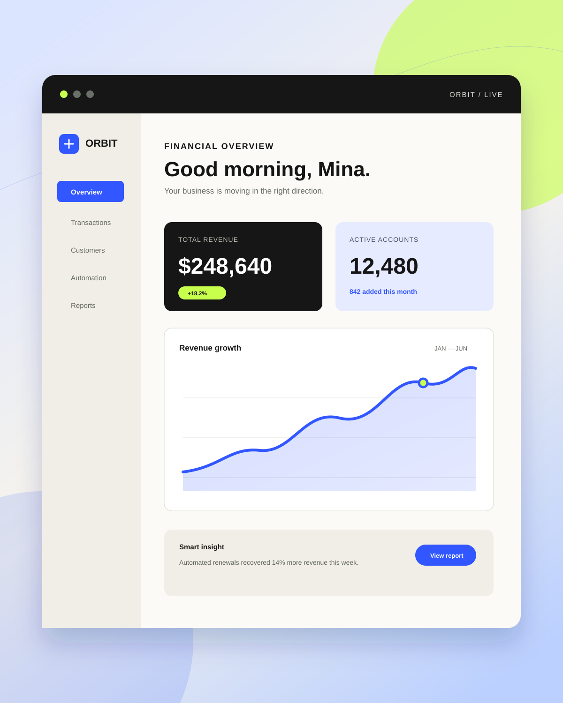
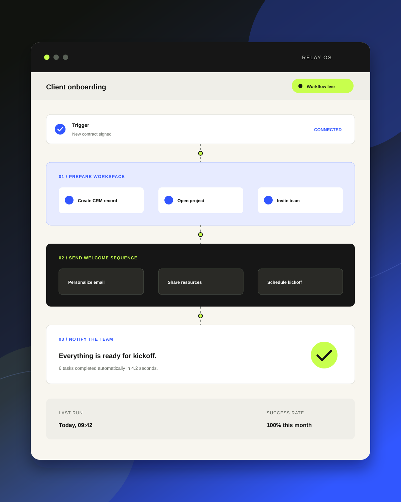

Digital direction
Positioning, content structure, art direction, and interface systems built around a clear point of view.
- Strategy
- UX and content
- Visual systems
Independent digital studio / Kuala Lumpur
We design distinctive digital experiences and the intelligent workflows behind them, so your brand looks considered and your business moves faster.
What we believe
It should explain the value, earn attention, and connect cleanly to the systems that run your business. We bring brand thinking, interface design, development, and automation into one focused process.
Capabilities
From first impression to final handoff, every part is designed to work as one system.
Positioning, content structure, art direction, and interface systems built around a clear point of view.
Responsive, accessible builds with clean interactions, strong performance, and no unnecessary complexity.
Reliable connections between the tools you already use, removing repetitive work and fragile handoffs.
Selected directions
Concept studies showing how product thinking, clear interfaces, and connected systems can turn complex work into simple experiences.

Fintech concept 01
A focused financial platform that turns live business data into clear decisions and useful next actions.

Automation concept 02
An operations workspace that makes multi-step client onboarding visible, reliable, and effortlessly repeatable.
Beyond the website
We connect the moments customers see with the operations your team relies on. Every lead reaches the right place, every handoff has an owner, and routine follow-up happens on time.
Explore automationHow we work
A senior, collaborative process with fewer layers, direct feedback, and visible progress.
We align on audience, goals, constraints, and what success needs to look like.
We shape the hierarchy, interactions, and art direction before committing to code.
We develop, connect, test, and refine the complete experience across devices.
We handle final checks, handover, and the practical systems needed after launch.
Have a project in mind?
Share what you are building, where you are stuck, or what needs to work better. We will reply with a clear next step.